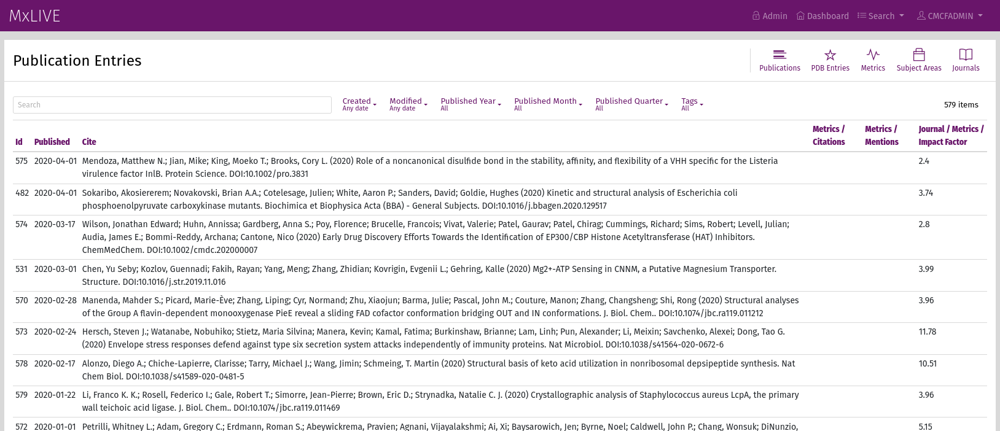
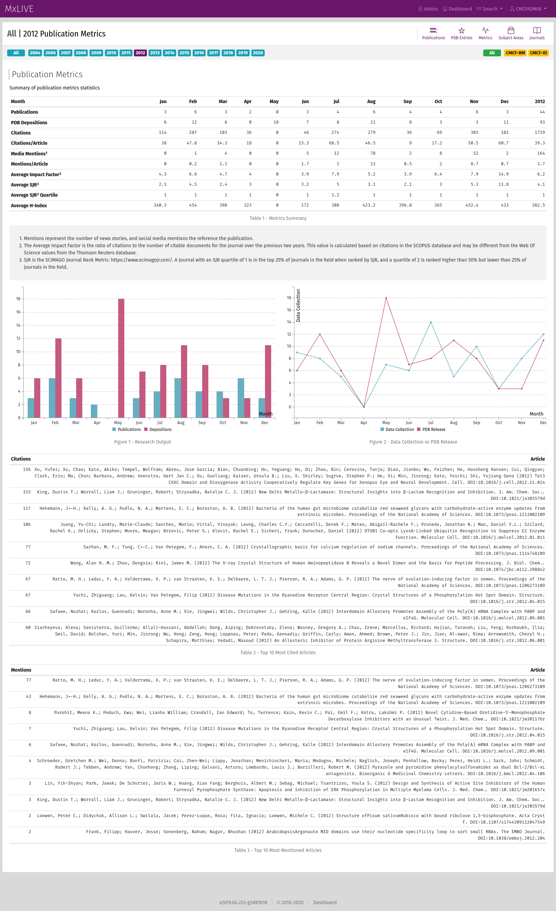

Publications¶
Publications in MxLIVE are fetched automatically. There is no mechanism for manually adding depositions or articles at this time.
PDB depositions are fetched periodically from public online sources. New depositions are added to MxLIVE, along with any associated articles.
Icons in the toolbar give access to:
detailed list of PDBs, Subject Areas, and Journals, and
publications metrics (statistics).
Setup¶
The following variables can be added to your settings.py file to override the default values:
Settings |
Default |
Usage |
|---|---|---|
PDB_FACILITY_ACRONYM |
‘CLSI’ |
Used to build a search query provided to the PDB_SEARCH_URL |
CONTACT_EMAIL |
Contact email provided to CrossRef |
|
CROSSREF_API_KEY |
None |
API key used for CrossRef calls |
CROSSREF_THROTTLE |
1 |
Time delay (seconds) between CrossRef calls |
CROSSREF_BATCH_SIZE |
10 |
Limit the number of publications fetched from CrossRef at a time |
PDB_SEARCH_URL |
Fetch all PDB codes related to PDB_FACILITY_ACRONYM |
|
PDB_REPORT_URL |
Fetch detailed report for codes fetched from PDB_SEARCH_URL |
|
GOOGLE_API_KEY |
None |
API key used for calls to GOOGLE_BOOKS_API |
GOOGLE_BOOKS_API |
Fetch information about books related to PDBs |
|
SCIMAGO_URL |
Fetch journal metrics which are then stored by year |
Mentions and citations are fetched from https://api.eventdata.crossref.org/v1/events/distinct and https://www.crossref.org/openurl/.
Beamline Tags¶
To tag depositions and articles by beamline, define a PDB_TAG_FUNCTION in your settings.py file, mapping
beamline acronyms from the source to the acronyms defined for your beamline(s) in MxLIVE:
def clsi_beamline_tags(entry):
"""
Generate proper CLSI beamline tags for publications
:param entry: the entry from the PDB report
:return: a list of tag names
"""
acronym = entry['diffractionSource'].split()[-1]
acronyms = {
'08ID-1': ['CMCF-ID'],
'08ID-2': ['CMCF-ID'],
'08B1-1': ['CMCF-BM'],
'CLSI': ['CMCF-ID', 'CMCF-BM',],
}
return acronyms.get(acronym, [])
PDB_TAG_FUNCTION = clsi_beamline_tags
Statistics¶
Publications metrics can be filtered by year and beamline.
